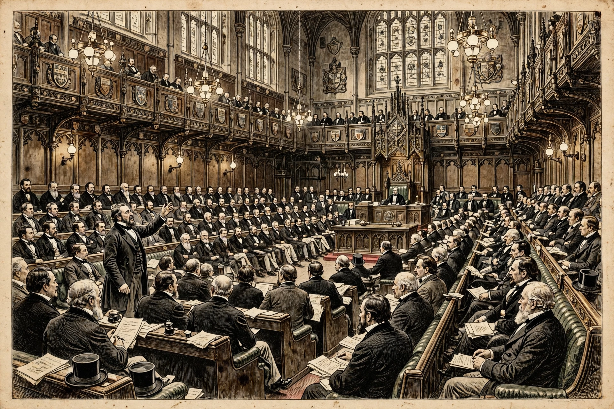

| Representation of the People Act 1867 | |
|---|---|
| Citation | 30 & 31 Vict. c. 102 |
| Introduced by | Benjamin Disraeli |
| Royal assent | 15 August 1867 |
The Representation of the People Act 1867, known as the Reform Act 1867 or the Second Reform Act, extended the franchise in England and Wales, roughly doubling the electorate by enfranchising many urban working-class men. It followed the Reform Act 1832 and preceded the Reform Act 1884.
In boroughs, all male householders and lodgers paying at least £10 rent who had lived there for a year gained the vote. In counties the property threshold was lowered. Seats were also redistributed, with some small boroughs losing representation and new seats created for growing industrial towns.
The act was passed by the Conservative minority government of the Earl of Derby, with Chancellor of the Exchequer Benjamin Disraeli steering it through the Commons and accepting radical amendments, famously described as 'dishing the Whigs'. John Stuart Mill's proposed amendment to enfranchise women was defeated.
The electorate rose from about one million to roughly two million men, reshaping party organisation and prompting the secret ballot (1872) and corrupt practices legislation.